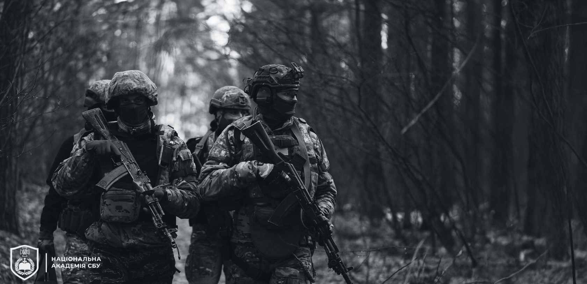

КРОК 1
Роздрукуйте зразок заяви, закріплений нижче.
Роздрукуйте зразок заяви, закріплений нижче.
Заповніть заяву від руки за зразком, закріпленим нижче.
Заповнену від руки заяву занесіть у регіональне Управління СБУ. Адресу та контактний номер телефону необхідного вам Управління СБУ ви можете знайти тут.
АБО
Якщо немає можливості подати заяву в регіональне Управління СБУ, зробіть скан-копію заповненої від руки заяви й надішліть її на електронну пошту Академії СБУ na_f1@ssu.gov.ua, і ми передамо її на опрацювання до регіонального Управління СБУ.
Якщо ви надіслали заяву на електронну пошту Академії СБУ, очікуйте на електронний лист про отримання вашої заяви протягом 3–5 робочих днів. Якщо підтвердження не надійшло, звертайтесь за номером +38 (063) 229-58-45 або в месенджери офіційних соціальних мереж Академії СБУ.
Через 2–3 тижні після підтвердження отримання вашої заяви очікуйте на виклик від регіонального Управління СБУ.

ГОТОВІ
ПРИЄДНАТИСЬ
ДО НАС?
[ відповіді тут ]
Вступник має особисто подати заяву до регіонального Управління СБУ. Якщо немає можливості це зробити, ви можете зробити скан-копію заповненої заяви і надіслати її на електронну пошту: na_f1@ssu.gov.ua.
Заява подається на ім’я Голови Служби безпеки України.
На сайті Служби безпеки України https://ssu.gov.ua/ у розділі «КОНТАКТИ» внизу сторінки ви можете побачити інтерактивну мапу. Після натискання на відповідну область справа з’являться адреса та контактний номер телефону конкретного Управління. Якщо ви не зможете знайти адресу необхідного Управління, можете надіслати заяву на електронну пошту na_f1@ssu.gov.ua і вона буде передана до органу СБУ відповідно до вашого місця реєстрації.
Так, але ви маєте вказати у заяві український номер телефону та прибути до України для проходження всіх етапів перевірки. Участь у відборі на навчання в статусі курсанта можлива лише за умови вашого перебування в Україні. Важливо! Для вступу ви маєте надати свідоцтво про отримання повної загальної середньої освіти в Україні (або інше свідоцтво, яке відповідає 5 рівню Національної рамки кваліфікацій).
В одній заяві можна вказати лише одну спеціальність.
На обох спеціальностях ви вивчатимете дисципліни, необхідні для оперативного співробітника СБУ. Особливістю навчання за спеціальністю «Національна безпека» є посилена кібернетична складова. Курсанти вивчають інформаційно-комунікаційні системи та мережі, стратегічні комунікації тощо. На спеціальності «Державна безпека» готують класичного контррозвідника. Якщо вам ближче гуманітарні науки і ви мрієте про оперативну роботу в СБУ, сміливо обирайте цю спеціальність. Якщо ж хочете розвиватися в кіберзахисті та точних науках — обирайте «Національну безпеку».
За цією спеціальністю курсанти опановують дві іноземні мови: англійську та одну з дванадцяти мов, представлених в Академії (східні, східноєвропейські, романо-германські).
Жодна зі спеціальностей не обмежує перелік підрозділів СБУ, де ви зможете проходити військову службу після випуску.
Будь-яку із запропонованих спеціальностей. Спеціальність не обмежує вектор майбутнього професійного розвитку випускника в межах СБУ.
Будь-яку, оскільки цілеспрямовану підготовку кадрів для ЦСО «А» СБУ ми не здійснюємо. Водночас, курсанти, які бажають стати спецпризначенцями, самостійно посилено працюють над своєю фізичною і психологічною витривалістю, щоб пройти додатковий відбір. Для цього в Академії створені всі необхідні умови та ресурси. І чимало наших випускників долучаються до бойового підрозділу СБУ.
Так. Якщо ви надсилали на нашу електронну пошту заяву про вивчення вас як кандидата на навчання у статусі курсанта, то протягом 2-3 робочих днів на ваш e-mail має надійти лист-підтвердження про отримання вашої заяви. Якщо такий лист ви не одержали, зверніться, будь ласка, до Приймальної комісії за номером +38 063 229 58 45 (WhatsApp, Signal) або в месенджери соціальних мереж Академії.
Виклик з Управління має надійти протягом 2-3 тижнів з моменту підтвердження Академією отримання вашої заяви. Якщо визначений термін сплив, а вам так і не зателефонували, зверніться, будь ласка, до Приймальної комісії за номером +38 063 229 58 45 (WhatsApp, Signal) або в месенджери соціальних мереж Академії.